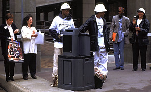

Two community participants from Youthbuild, Inc.,
talk about the organization's contribution to "End of the Line"
and its mission to give young people employable skills through its building
renovation projects. Photographs of Youthbuild members in action are featured
in the "Rebuilding"
billboard. |
|